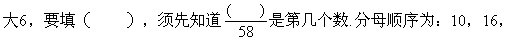
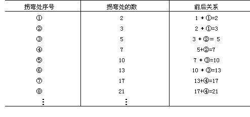
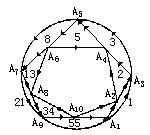

习题十四解答
1.①∵相邻两数的差均为4，故括号里应填17+4＝21。
②∵1.25-0.625=0.625，
2. 5-1.25=1.25，
3. 5-2.5=2.5，
可见差正好等于减数。
∴（ ）-5＝5，
∴（ ）=5＋5=10。
或者：后一个数为前一个数的2倍，故
括号里应填2×5=10。
③∵从数列可见分子从2开始逐个增大1；分母从10开始逐个增
22，28，34，40，46，52，58。
∴这个分数为第9个数。
∴括号里应填10。
④十位上数不变，百位上数依次递增1，个位上数依次递减1，故括号中数应填594，693。
2.解：拐弯处数的规律可见下页表。

∴第19个拐弯处的数比第18个拐弯处的数大10，第20个拐弯处的数比第19个拐弯处的数也大10，故第20个拐弯处的数为：
1+2×（1+2+3＋…＋10）＝111。
3.解：假设n个人站成一排共有an种不同站法.可以先让其中的n-1个人站成一排，共有an-1种不同的站法，再让剩下的那个人站在他们中间或两头，又有n种站法.由乘法原理，可得到递推公式：
an＝n×an-1。
又∵a1＝1，
∴a4=4×a3＝4×3×a2=4×3×2×a1=4！＝24。
4.解：设登上n级楼梯共有an种不同走法，n＝1，2，….把上到第n级楼梯的情形分为两种走法.一类是先上到第n-1级楼梯，然后再上一级，共有an-1种走法.另一类是先上到第n-2级楼梯，然后再上两级，共有an-2种走法.由加法原理，上到第n级楼梯的走法an满足下列递推关系式：
an=an-1＋an-2。
又∵a1=1，a2=2，故上楼梯方法数an依次为1，2，3，5，8，13，21，34，55，89，144，233，….
∴上到第12级楼梯共有233种不同走法。
5.解：设从A1按箭头方向走到An+1的走法数为an，n=1，2，…，9.则a9即为所求（因为从A10回到A1只有一种方式）.可见，a1=1，a2=2，ak＋1=ak＋ak-1为递推公式。
∴an（n＝1，2，…，9）依次为1，2，3，5，8，13，21，34，55.即共55种不同的走法。也可以用图来表示解答过程.

每一个村（点）旁边的数字就是到这村的不同走法个数.正好符合斐波那契数列的特点。
从A1出发走到A2点只有一种方式，A2点标有数目1.从A1到A3，一种直接沿圆弧走，另一种途经A2走，所以共有1＋1＝2种方式，从A1到A4，有两种方式，一种途经A2再沿从A2到A4的直线走，另一种途经A3到A4.所以总方式数目等于A1到A2的方式数加A1到A3的方式数。
也即（A1→→A4）方式数
=（A1→→A2）方式数+（A1→→A3）方式数
=1＋2
＝3。
其余类推.